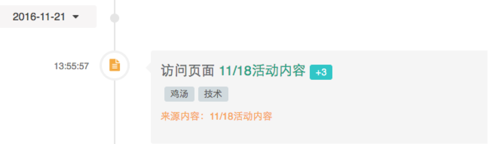

客户事件
创建客户事件的API
调用请求
HTTP请求方式: POST
https://api.convertlab.com/v1/customerevents?access_token={access_token}
POST请求示例：
{
"customerId": "123456",
"event": "c_apply_card",
"targetId": "golden_card",
"targetName": "金卡",
"date": "2017-06-07T03:43:00Z",
"source": "人民广场",
"touter": "t00001"
}
参数说明
- {access_token}为访问接口的令牌
- 请求体内字段的意义请参见客户事件模型部分
返回结果
{
"id": 1,
"customerId": 123456,
"event": "c_apply_card",
"targetId": "golden_card",
"targetName": "金卡",
"date": "2017-06-07T03:43:00Z",
"source": "人民广场",
"score": 0,
"tag": null,
"campaign": null,
"campaignName": null,
"contentName": null,
"externalId": null,
"lastUpdated": "2017-06-07T05:38:52Z",
"touter": "t00001"
}
获取单个事件的API
调用请求
HTTP请求方式: GET
https://api.convertlab.com/v1/customerevents/{id}?access_token={access_token}
参数说明
- {access_token}用从“获取身份权限”节拿到的access_token替换
- id 客户事件id
返回结果
{
"id": 1,
"customerId": 123456,
"event": "c_apply_card",
"targetId": "golden_card",
"targetName": "金卡",
"date": "2017-06-07T03:43:00Z",
"source": "人民广场",
"score": 0,
"tag": null,
"campaign": null,
"campaignName": null,
"contentName": null,
"externalId": null,
"lastUpdated": "2017-06-07T05:38:52Z",
"touter": "t00001"
}
查询事件的API
调用请求
HTTP请求方式: GET
https://api.convertlab.com/v1/customerevents?access_toke={access_token}&customerId={customerId}&events={events}&lastUpdatedFrom={lastUpdatedFrom}&lastUpdatedTo={lastUpdatedTo}&max={max}&rows={rows}&page={page}&sidx={sidx}&sord={sord}
参数说明
| 参数 | 是否必填 | |
|---|---|---|
| access_token | 是 | 访问API的令牌 |
| customerId | 否 | 查询指定客户的事件列表 |
| events | 否 | 查询指定的事件类型。多个事件类型可用逗号分开 |
| lastUpdatedFrom | 否 | 事件更新的起始时间。时间格式为 “2017-06-07T12:13:14Z”, 为UTC时间 |
| lastUpdatedTo | 否 | 事件更新的结束时间。时间格式同上 |
| max | 否 | 最多返回多少条数据，默认为20，最大可到1000 |
| rows | 否 | 每页的记录数 |
| page | 否 | 起始页数，以1开始 |
| sidx | 否 | 排序的字段，比如如果按lastUpdated排序，sidx=lastUpdated |
| sord | 否 | asc表示升序，desc表示降序，默认为升序 |
返回结果
[
{
"id": 1,
"customerId": 123456,
"event": "c_apply_card",
"targetId": "golden_card",
"targetName": "金卡",
"date": "2017-06-07T03:43:00Z",
"source": "人民广场",
"score": 0,
"tag": null,
"campaign": null,
"campaignName": null,
"contentName": null,
"externalId": null,
"lastUpdated": "2017-06-07T06:43:29Z",
"touter": "t00003"
}
]
获取客户事件的API
调用请求
HTTP请求方式: GET
https://api.convertlab.com/v1/customerevents?access_token={access_token}
参数说明
- {access_token}用从“获取身份权限”节拿到的access_token替换
- 除了access_token参数外，该API还支持以下参数来缩小查询结果集:
- customerId 查询某个客户的行为事件
- events 以逗号隔开的事件列表
- lastUpdatedFrom 事件更新的起始时间(包含)
- lastUpdatedTo 事件更新的结束时间(包含)
- max 查询事件的数量，默认为20 （目前最多可以得到1000个事件，后期版本会允许获取更多事件
- 除了以上查询参数外，该API还支持分页和排序参数
- rows 每页的记录数
- page 第几页
- sidx 排序的字段, 比如sidx=lastUpdated是按照lastUpdated字段排序
- sord 排序的方式, asc是升序，desc是降序
返回参数
[
{
"attr1": null,
"attr2": null,
"attr3": null,
"attr4": null,
"attr5": null,
"batchId": null,
"campaign": null,
"campaignName": null,
"channelAccount": null,
"channelType": null,
"contentName": null,
"customerId": 0,
"date": "2019-04-19T12:59:02Z",
"device": null,
"employee": null,
"event": "default",
"eventGroup": null,
"externalId": null,
"fromCollector": false,
"id": 3900009,
"inbound": true,
"internalContentId": null,
"lastForwarder": null,
"lastUpdated": "2019-04-19T12:59:02Z",
"location": null,
"pageId": null,
"refScore": 0,
"referrer": null,
"referrerName": null,
"score": 0,
"source": null,
"summary": null,
"tag": null,
"targetId": "",
"targetName": null
},
{
"attr1": null,
"attr2": null,
"attr3": null,
"attr4": null,
"attr5": null,
"batchId": null,
"campaign": null,
"campaignName": null,
"channelAccount": null,
"channelType": null,
"contentName": null,
"customerId": 0,
"date": "2019-04-19T12:59:47Z",
"device": null,
"employee": null,
"event": "default",
"eventGroup": null,
"externalId": null,
"fromCollector": false,
"id": 3000010,
"inbound": true,
"internalContentId": null,
"lastForwarder": null,
"lastUpdated": "2019-04-19T12:59:47Z",
"location": null,
"pageId": null,
"refScore": 0,
"referrer": null,
"referrerName": null,
"score": 0,
"source": null,
"summary": null,
"tag": null,
"targetId": "",
"targetName": null
}
//其他客户事件.....
]
客户事件的字段信息
| 参数名 | 数据类型 | 说明 |
|---|---|---|
| id | number | 事件id |
| customerId | number | 客户的DM Hub id |
| event | string | 事件类型 |
| eventGroup | string | 事件所属分组 |
| targetId | string | 由event类型决定, 具体请查看event元数据 |
| targetName | string | 由event类型决定, 具体请查看event元数据 |
| date | datetime string | 事件发生时间，格式为"2016-04-01T13:39:32Z" |
| location | string | 事件发生的地点 |
| channelType | string | 事件发生的触点类型 |
| channelAccount | string | 事件发生的触点id |
| lastUpdated | datetime string | 最后更新时间 |
| source | bool | 来源 |
| score | int | 增加或减少的评分 |
| tag | string | 标签 |
| pageId | string | 微页面的id |
删除单个客户事件的API
调用请求
HTTP请求方式: DELETE
https://api.convertlab.com/v1/customerevents/{id}?access_token={access_token}
参数说明
- {access_token}用从“获取身份权限”节拿到的access_token替换
- {id}用从“查询客户的API”节拿到的客户id替换
获取事件的元数据
调用请求
HTTP请求方式: GET
https://api.convertlab.com/v1/meta/event?access_token={access_token}
示例
forContact: true,
isDropdown: true,
label: 访问页面,
name: open_page,
score: 3,
stage: Subscriber,
target: Page,
title:访问页面 <a target='_blank' href='/application/page/pages.html?uuid={targetId}'>;{targetName}</a>
对应的客户事件为
attr1: null,
attr2: null,
attr3: null,
attr4: null,
attr5: null,
batchId: null,
campaign: null,
campaignName: null,
channelAccunt: null,
channelType: wechat,
contentName: null,
customerId: 2951,
date: 2016-11-21T05:55:57Z,
device: null,
employee: null,
event: open_page,
externalId: null,
fromCollector: true,
id: 1737702,
inboud: true,
internalContentId: null,
lastForwarder: null,
lastUpdated: 2016-11-21T05:55:58Z,
location: null,
pageId: c452179b742b44f08c15a299b9988893,
refScore: 2,
referrer: null,
referrerName: null,
score: 3,
source: null,
summary: null,
tag: 鸡汤，技术,
targetId: c452179b742b44f08c15a299b9988893,
targetName: 11/18活动内容
根据元数据和客户事件渲染的时间轴部分如下图所示：

- 时间轴的时间对应客户事件的date字段
- 时间轴的“访问页面11/18活动内容”是将客户事件中targetId和targetName替换到客户元数据中title中占位符的结果
- 时间轴的+3对应客户事件的score字段
- 标签对应客户事件的tag字段
- 来源内容对应于访问页面事件来说就是客户事件的targetName
修改单个客户事件的API
调用请求
HTTP请求方式: PUT
https://api.convertlab.com/v1/customerevents/{id}?access_token={access_token}
PUT数据示例:
{
"customerId": id,
"date": "2016-02-10T00:00Z",
"event": "submit_form",
"targetId": "XXXX",
"targetName": "NXVBA_123"
}
参数说明
- {access_token}用从“获取身份权限”节拿到的access_token替换
- {id}用从“查询客户的API”节拿到的客户id替换